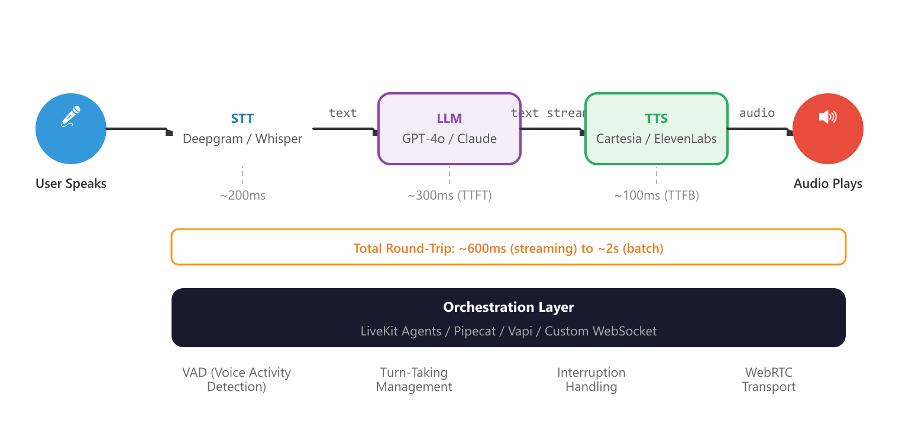

Whisper transcribes, an LLM decides, ElevenLabs speaks. Three vendors, three hops, and a 600-millisecond budget. The user does not care about the architecture; they hear the silence.
Echo, Three-Hop-Latency AI Agent
Voice is the most natural human interface, and multimodal AI is making it programmable. The convergence of high-quality speech recognition (Whisper, Deepgram), expressive text-to-speech (ElevenLabs, Cartesia), and real-time orchestration frameworks (LiveKit, Pipecat) has made it possible to build voice-first conversational AI that feels responsive and natural. Combined with vision capabilities, these systems can see what users see and respond in real time. This section covers the complete voice and multimodal stack, from individual components to production-ready pipelines. The streaming API patterns from Section 11.1 are essential for achieving the low latency that voice interfaces demand.
Prerequisites
Voice and multimodal conversational interfaces build on the dialogue system architecture from Section 37.1 and the persona design principles in Section 37.2. Understanding the multimodal model landscape from Section 31.1 will help you appreciate how vision and audio capabilities integrate into conversational systems.
39.6.1 Speech-to-Text (STT)
Speech-to-text converts spoken audio into text the LLM can process. Transcription quality directly affects conversational experience, because every transcription error propagates through the entire pipeline. Modern STT systems reach near-human accuracy for clear speech, but performance degrades with background noise, accents, domain-specific terminology, and overlapping speakers. Domain vocabulary can sometimes be improved by fine-tuning the transcription model on in-domain audio.
The human brain processes speech with a latency of about 200 milliseconds from ear to comprehension. Users start perceiving voice AI as "laggy" at around 500ms of silence after they stop talking. That 300ms gap is the entire engineering budget for speech recognition, LLM inference, and speech synthesis combined.
STT Provider Comparison
| Provider | Model | Latency | Strengths | Best For |
|---|---|---|---|---|
| OpenAI Whisper | whisper-1, whisper-large-v3 | Batch (seconds) | Multilingual, open-source, strong accuracy | Batch processing, self-hosted |
| Deepgram | Nova-2, Nova-3 | Streaming (~300ms) | Low latency, streaming, keyword boosting | Real-time voice AI, call centers |
| AssemblyAI | Universal-2 | Near real-time | Speaker diarization, sentiment, summarization | Meeting transcription, analytics |
| Google Cloud STT | Chirp 2 | Streaming (~200ms) | 100+ languages, medical/telephony models | Enterprise, multilingual |
| Groq (Whisper) | whisper-large-v3-turbo | Very fast batch | Extremely fast inference on Whisper | High-throughput batch transcription |
For real-time voice applications, latency beats accuracy. Choose Deepgram or Google Cloud STT with streaming enabled over Whisper in batch mode, even if Whisper scores slightly higher on word error rate benchmarks. Users tolerate occasional transcription errors far better than they tolerate a 2-second pause after every utterance.
Using Whisper for Transcription
This snippet transcribes audio input to text using OpenAI's Whisper model.
# implement transcribe_audio, transcribe_with_deepgram
from openai import OpenAI
from pathlib import Path
client = OpenAI()
def transcribe_audio(audio_path: str, language: str = None) -> dict:
"""Transcribe audio using OpenAI's Whisper API."""
with open(audio_path, "rb") as audio_file:
transcript = client.audio.transcriptions.create(
model="whisper-1",
file=audio_file,
language=language, # ISO 639-1 code, e.g., "en"
response_format="verbose_json",
timestamp_granularities=["word", "segment"]
)
return {
"text": transcript.text,
"language": transcript.language,
"duration": transcript.duration,
"segments": [
{
"text": seg.text,
"start": seg.start,
"end": seg.end
}
for seg in (transcript.segments or [])
]
}
def transcribe_with_deepgram(audio_path: str) -> dict:
"""Transcribe audio using Deepgram's Nova-2 model."""
from deepgram import DeepgramClient, PrerecordedOptions
deepgram = DeepgramClient() # Uses DEEPGRAM_API_KEY env var
with open(audio_path, "rb") as audio_file:
payload = {"buffer": audio_file.read()}
options = PrerecordedOptions(
model="nova-2",
smart_format=True, # Adds punctuation and formatting
utterances=True, # Detects speaker turns
diarize=True, # Speaker identification
language="en"
)
response = deepgram.listen.rest.v("1").transcribe_file(
payload, options
)
result = response.results
return {
"transcript": result.channels[0].alternatives[0].transcript,
"confidence": result.channels[0].alternatives[0].confidence,
"words": [
{
"word": w.word,
"start": w.start,
"end": w.end,
"confidence": w.confidence,
"speaker": w.speaker
}
for w in result.channels[0].alternatives[0].words
]
}
# Example usage
result = transcribe_audio("user_query.wav")
print(f"Transcription: {result['text']}")
print(f"Language: {result['language']}")
print(f"Duration: {result['duration']:.1f}s")For real-time voice AI, streaming transcription is essential. Batch transcription processes the entire audio file at once, introducing latency proportional to the audio length. Streaming transcription processes audio in chunks as it arrives, producing partial transcripts that update in real time. Deepgram and Google Cloud STT offer true streaming; Whisper is primarily batch-oriented, though Groq's accelerated Whisper inference narrows this gap significantly.
How Streaming Finalization Works
The provider table tells you which vendors stream, but not what "streaming" actually does to the transcript. The mechanism is worth a short recap, because it explains why the partial text on screen keeps rewriting itself and why the system eventually decides a phrase is done. A streaming recognizer runs a sliding window over the incoming audio frames (typically 10 to 30 ms each) and re-decodes the window every few frames. Each decode emits a partial hypothesis: the recognizer's current best guess for the words spoken so far. Partials are provisional and may be revised on the next frame, which is why "I want to" can flicker to "I want two" and back as more acoustic evidence arrives. A final hypothesis is a partial the recognizer commits to and will never revise, releasing it downstream to the LLM.
The question is when to promote a partial to a final. Committing too early ships a wrong word that the next frame would have corrected; committing too late leaves the LLM idle, burning the latency budget. The standard rule fires a finalization when either of two signals says the phrase has settled. Let $h_t$ be the partial hypothesis at frame $t$. The recognizer finalizes when:
The first clause is the stability test: the hypothesis has stayed unchanged across the last $N$ decoded frames, so further audio is unlikely to revise it. The second clause is the endpoint test: a voice-activity detector has observed a trailing silence of at least $\theta$ milliseconds, signaling the speaker has stopped. With $N$ small and $\theta$ short the recognizer finalizes aggressively, cutting latency at the risk of clipping a speaker who merely paused mid-thought; with $N$ large and $\theta$ long it waits for certainty at the cost of a sluggish feel. This is the same latency-versus-accuracy knob that the endpointing parameters expose in production, set to roughly 300 ms for phone calls where people pause often.
This recap is deliberately compact because the full streaming pipeline, including the overlapped STT-LLM-TTS latency budget and the turn-taking state machine that consumes these finals, is derived in detail in Section 39.1 and Section 39.2. The takeaway for choosing a provider from the table above: a vendor's quoted streaming latency is largely a statement about how its default $N$ and $\theta$ are tuned, which is why the same audio finalizes faster on a low-latency streaming model than on a batch-oriented one.
39.6.2 Text-to-Speech (TTS)
Text-to-speech converts the LLM's text response into spoken audio. The quality bar for TTS has risen dramatically; modern systems produce speech that is nearly indistinguishable from human voice in controlled settings. The key differentiators are naturalness, emotional expressiveness, latency (time to first audio byte), and voice cloning capabilities.
TTS Provider Comparison
| Provider | Latency (TTFB) | Voice Quality | Key Features |
|---|---|---|---|
| ElevenLabs | ~300ms | Excellent | Voice cloning, emotional control, 32 languages |
| PlayHT | ~200ms | Very good | Ultra-low latency mode, voice cloning, streaming |
| Cartesia | ~100ms | Very good | Fastest TTFB, emotion/speed control, streaming |
| OpenAI TTS | ~400ms | Good | Simple API, 6 built-in voices, affordable |
| Azure Neural TTS | ~200ms | Very good | SSML support, 400+ voices, enterprise SLAs |
# implement text_to_speech_openai
from openai import OpenAI
from pathlib import Path
client = OpenAI()
def text_to_speech_openai(text: str, voice: str = "nova",
output_path: str = "response.mp3") -> str:
"""Generate speech from text using OpenAI's TTS API."""
response = client.audio.speech.create(
model="tts-1-hd", # Higher quality; use "tts-1" for lower latency
voice=voice, # alloy, echo, fable, onyx, nova, shimmer
input=text,
speed=1.0 # 0.25 to 4.0
)
response.stream_to_file(output_path)
return output_path
async def text_to_speech_elevenlabs(
text: str,
voice_id: str = "21m00Tcm4TlvDq8ikWAM", # Rachel
output_path: str = "response.mp3"
) -> str:
"""Generate speech using ElevenLabs with streaming."""
from elevenlabs import ElevenLabs
eleven = ElevenLabs() # Uses ELEVEN_API_KEY env var
audio_generator = eleven.text_to_speech.convert(
voice_id=voice_id,
text=text,
model_id="eleven_turbo_v2_5",
output_format="mp3_44100_128",
voice_settings={
"stability": 0.5,
"similarity_boost": 0.75,
"style": 0.3,
"use_speaker_boost": True
}
)
# Write streaming audio to file
with open(output_path, "wb") as f:
for chunk in audio_generator:
f.write(chunk)
return output_path
# Simple usage
output = text_to_speech_openai(
"Hello! I'd be happy to help you check your order status. "
"Could you provide me with your order number?",
voice="nova"
)
print(f"Audio saved to: {output}")
In voice AI, time-to-first-byte (TTFB) matters more than total generation time. Users perceive a system as fast if audio starts playing quickly, even if the full response takes several seconds to generate. This is why streaming TTS (where audio chunks are sent as they are generated) is critical for real-time voice applications. A system with 100ms TTFB that streams audio progressively feels much faster than a system with 500ms TTFB that delivers the complete audio at once.
39.6.3 Real-Time Voice AI Pipelines
A real-time voice AI pipeline connects STT, LLM, and TTS into a seamless flow where the user speaks, the system processes their speech, generates a response, and speaks it back, all with minimal perceptible delay. The total round-trip latency (from when the user finishes speaking to when the first audio of the response plays) is the key performance metric. Users expect sub-second response times for conversational interactions. Figure 39.1.1a shows the real-time voice AI pipeline.

Building a Voice Pipeline with Pipecat
This snippet assembles a real-time voice pipeline using the Pipecat framework for speech-to-text, LLM processing, and text-to-speech.
# Implementation example
import asyncio
from pipecat.frames.frames import TextFrame, AudioRawFrame
from pipecat.pipeline.pipeline import Pipeline
from pipecat.pipeline.task import PipelineTask
from pipecat.services.openai import OpenAILLMService
from pipecat.services.deepgram import DeepgramSTTService
from pipecat.services.cartesia import CartesiaTTSService
from pipecat.transports.services.daily import DailyTransport
async def create_voice_bot():
"""Create a real-time voice AI bot using Pipecat."""
# Transport layer (handles WebRTC audio/video)
transport = DailyTransport(
room_url="https://your-domain.daily.co/room-name",
token="your-daily-token",
bot_name="Assistant"
)
# Speech-to-text
stt = DeepgramSTTService(
api_key="your-deepgram-key",
model="nova-2",
language="en"
)
# Language model
llm = OpenAILLMService(
api_key="your-openai-key",
model="gpt-4o",
system_prompt=(
"You are a helpful voice assistant. Keep responses "
"concise (1-2 sentences) since this is a voice conversation. "
"Be natural and conversational."
)
)
# Text-to-speech
tts = CartesiaTTSService(
api_key="your-cartesia-key",
voice_id="a0e99841-438c-4a64-b679-ae501e7d6091",
model_id="sonic-english",
sample_rate=16000
)
# Build the pipeline: audio in -> STT -> LLM -> TTS -> audio out
pipeline = Pipeline([
transport.input(), # Receive user audio
stt, # Transcribe to text
llm, # Generate response
tts, # Synthesize speech
transport.output() # Send audio to user
])
task = PipelineTask(pipeline)
await task.run()
# Run the voice bot
asyncio.run(create_voice_bot())Voice interfaces impose constraints that text-based chat does not. Responses must be concise (users cannot "scan" audio the way they scan text). Latency above 1.5 seconds feels unresponsive. The system needs voice activity detection (VAD) to know when the user has finished speaking. It must handle interruptions (the user speaking while the system is still talking). And the response text must be optimized for spoken delivery: avoid parenthetical asides, complex lists, URLs, or code snippets that work in text but sound terrible when spoken aloud.
39.6.4 Voice-Specific Orchestration Challenges
Beyond the basic STT/LLM/TTS pipeline, real-time voice AI requires solving several orchestration challenges that do not arise in text-based chat.
Interruption Handling
Users may interrupt the system while it is speaking. The system needs to detect the interruption, stop the current audio playback, process the new input, and respond without losing context. This requires coordination between the STT, TTS, and transport layers.
class InterruptionHandler:
"""Manages user interruptions during system speech."""
def __init__(self):
self.is_speaking = False
self.current_utterance: str = ""
self.spoken_so_far: str = ""
async def on_speech_started(self, text: str):
"""Called when the system starts speaking."""
self.is_speaking = True
self.current_utterance = text
self.spoken_so_far = ""
async def on_speech_chunk_played(self, chunk_text: str):
"""Track how much of the response has been spoken."""
self.spoken_so_far += chunk_text
async def on_user_interruption(self, user_audio_detected: bool):
"""Handle user interrupting system speech."""
if not self.is_speaking or not user_audio_detected:
return None
self.is_speaking = False
# Calculate what was and was not heard
unspoken = self.current_utterance[len(self.spoken_so_far):]
return {
"action": "interrupted",
"spoken_portion": self.spoken_so_far.strip(),
"unspoken_portion": unspoken.strip(),
"context_note": (
f"System was saying: '{self.spoken_so_far.strip()}' "
f"but was interrupted. The rest ('{unspoken.strip()[:50]}...') "
"was not heard by the user."
)
}
async def on_speech_completed(self):
"""Called when system finishes speaking without interruption."""
self.is_speaking = False
self.spoken_so_far = ""
self.current_utterance = ""
Real-time speech-to-speech models (e.g., GPT-4o voice mode, Gemini Live) bypass the traditional ASR-LLM-TTS pipeline by processing audio tokens directly, reducing latency and preserving prosodic information. Multimodal conversation agents can see, hear, and respond with text, images, and audio in a unified dialogue flow. Emotion-aware voice interfaces detect user sentiment from vocal cues and adjust response tone accordingly. Research into ambient conversational AI is developing always-listening agents (with appropriate consent) that can proactively offer information or assistance based on overheard context, raising important privacy and consent questions.
Objective
Stand up a working voice agent that streams microphone audio over WebRTC into the OpenAI Realtime API, hears the model reply, plays it back, and measures end-to-end latency (time from end-of-user-utterance to start-of-model-audio). By the end, you will have a number on a sub-500 ms target and know which leg of the pipeline owns the lion's share of the delay.
Setup
You need an OpenAI key with Realtime API access, Python 3.11+, a headset, and the LiveKit Agents framework (it wraps the Realtime API in a clean event loop). LiveKit also provides a hosted SFU free tier so you do not need to run your own TURN server.
pip install livekit livekit-agents livekit-plugins-openai sounddeviceSteps
- Bootstrap a LiveKit room: Create a free LiveKit Cloud project, copy the URL and API key. Run the LiveKit playground (a web client) and verify your browser microphone connects.
- Write the agent: Build a Python entrypoint that uses
livekit.agents.multimodal.MultimodalAgentwrappingopenai.realtime.RealtimeModel. Configure server-side VAD withturn_detection={"type": "server_vad", "threshold": 0.5}. - Instrument latency: Subscribe to the
input_audio_buffer.speech_stoppedandresponse.audio.deltaevents from the Realtime API. Record timestamps and compute end-to-end latency on every turn. - Run a structured conversation: Read 10 short scripted prompts ("What is the capital of France?", "Spell mississippi", etc.) into the mic. Log the latency for each turn to a CSV.
- Profile the breakdown: Use the Realtime API event timestamps to attribute latency to VAD-end-detection, model thinking, first audio chunk, and network. Plot a stacked-bar chart.
Expected Output
End-to-end latency typically lands in the 350 to 700 ms range over residential Wi-Fi. Model thinking usually dominates (around 200 to 400 ms); VAD-end detection adds another 200 ms in the default config and is the easiest knob to tune.
Extension
Switch the VAD threshold from 0.5 to 0.3 and add a silence_duration_ms=200 override; measure the latency improvement and the false-cutoff rate.
- STT accuracy is the foundation: Every transcription error propagates through the entire pipeline. Choose STT providers based on your specific requirements: Deepgram for low-latency streaming, Whisper for multilingual batch processing, AssemblyAI for analytics-rich transcription.
- TTFB trumps total latency: In voice AI, time-to-first-byte is the most important latency metric. Streaming TTS that starts playing quickly creates a perception of responsiveness even if total generation takes longer.
- Orchestration is the hard part: The individual components (STT, LLM, TTS) are well-solved problems. The engineering challenge is orchestrating them with proper VAD, turn-taking, interruption handling, and transport. Frameworks like Pipecat and LiveKit Agents abstract much of this complexity.
- Voice requires different response design: Text responses do not translate well to voice. Keep responses short, avoid visual formatting, optimize for spoken delivery, and use conversational phrasing. Add filler phrases to indicate processing.
- Multimodal is more than voice: Vision-capable models enable powerful new interaction patterns where users share images, screenshots, or camera feeds. The conversation history must track both text and image references to maintain context across multimodal interactions.
Show Answer
Show Answer
Show Answer
Show Answer
Show Answer
Exercises
Describe the three main stages of a traditional voice AI pipeline. What is the bottleneck that determines end-to-end latency?
Show Answer
Three stages: (1) Speech-to-Text (STT): convert audio to text. (2) LLM processing: generate a text response. (3) Text-to-Speech (TTS): convert text response to audio. The LLM processing step is typically the latency bottleneck, though TTS quality/latency tradeoffs matter for user experience.
Explain why turn-taking is harder in voice conversations than in text chat. What is Voice Activity Detection (VAD) and how does it help?
Show Answer
In text, turn boundaries are explicit (user presses send). In voice, the system must detect when the user has finished speaking, handling pauses, filler words ("um"), and interruptions. VAD analyzes audio energy and spectral features to detect speech vs. silence, signaling when the user has stopped talking.
Compare streaming TTS (audio starts playing before generation completes) with batch TTS (wait for full generation). When is each appropriate?
Show Answer
Streaming: lower perceived latency, audio starts immediately, ideal for conversational interfaces. Batch: higher quality (the TTS can plan prosody for the entire utterance), better for pre-generated content like audiobooks. Use streaming for interactive conversations, batch for offline content generation.
How can a voice AI system detect user frustration from audio alone? What actions should the system take when frustration is detected?
Show Answer
Frustration signals in audio: increased volume, faster speech rate, rising pitch, sighing, repetition of keywords. Actions: acknowledge the frustration ("I understand this is frustrating"), simplify the response, offer to escalate to a human agent, and reduce response verbosity.
Explain how native speech-to-speech models (like GPT-4o voice) differ from the traditional STT-LLM-TTS pipeline. What advantages do they offer in terms of latency and expressiveness?
Show Answer
Native speech-to-speech models process audio tokens directly without intermediate text conversion. Advantages: lower latency (no STT/TTS overhead), preservation of prosody and emotion from input to output, ability to generate non-verbal sounds (laughter, sighs), and better handling of multilingual or code-switched speech.
Transcribe 5 audio clips using Whisper (local) and a cloud STT API. Compare accuracy, latency, and handling of background noise.
Generate speech from the same text using 3 different TTS services. Compare naturalness, pronunciation accuracy, and emotional expressiveness. Score each on a 1 to 5 scale.
Build a simple voice chatbot: record user speech, transcribe with Whisper, generate a response with an LLM, convert to speech with a TTS API, and play the audio. Measure the total round-trip latency.
Build a conversation system that accepts both text and image inputs. When the user uploads an image, use a vision model to describe it, then incorporate the description into the conversation context.
You have now seen the core voice AI stack: STT, TTS, real-time pipelines, and the orchestration challenges they create. Next we add vision to those conversations, study native speech-to-speech models that bypass the text bottleneck, and compare voice AI frameworks for production. Continue with Section 39.7: Vision, Speech-to-Speech, and Voice AI Frameworks.